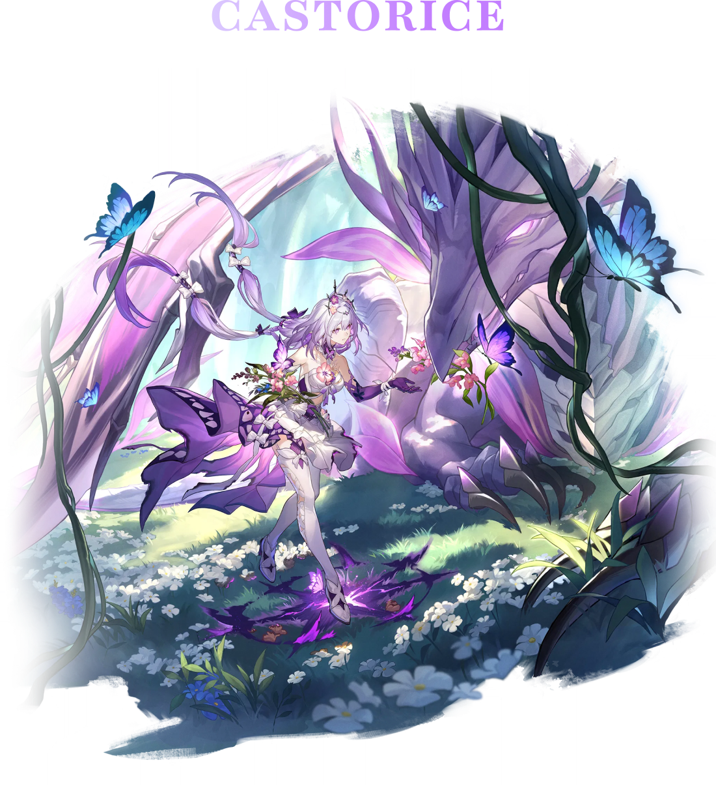
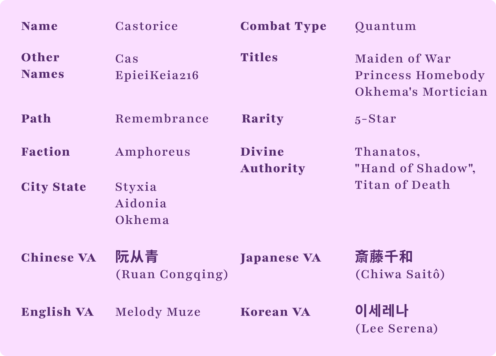

"Servant of Death",Castorice. The land that reveres death, Aidonia, where snow falls endlessly, has today drifted into a sweet slumber. Castorice, daughter of the River of Souls, Chrysos Heir in search of "Death" Coreflame, sets forth. You must guard the lament of souls and embrace the solitude of destiny. Life and death are but a journey. When butterfly alights on the branch, what withers will bloom anew.